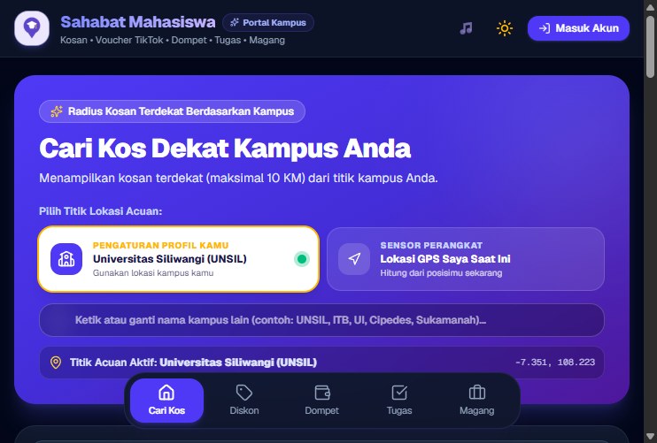

Aplikasi Kampus Terintegrasi

Sahabat Mahasiswa
Ekosistem pendamping mahasiswa untuk mencari kosan di sekitar kampus UNSIL (radius 10 km Tasikmalaya), menghitung target IPK, dan mencatat jadwal kuliah. Dibangun dengan dukungan akses offline lintas Web PWA, Android APK, dan Windows Electron.
Tantangan Teknis Utama:
Menjaga sinkronisasi data offline-first dan alur autentikasi fallback agar berjalan konsisten di Web, Android WebView (tanpa alert bawaan), dan Electron IPC.